Первый запуск
Кратко для тех, кто впервые получил программу на ПК. Полный текст также лежит в файлах README.txt и Инструкция_пользователю.txt в папке с программой (их копирует сборка в dist вместе с exe).
Вариант: только файл PoverkiVSE.exe
- Создайте папку на диске (например, в «Документах») и положите туда PoverkiVSE.exe.
- Запустите exe. При первом старте программа сама создаст рядом папки
data(база) иdocuments(вложения к приборам). - Запуск из архива без распаковки не рекомендуется — сначала распакуйте в обычную папку.
- Если Windows показывает предупреждение о неизвестном издателе — для неподписанных программ это нормально; при необходимости выберите «Подробнее» → «Выполнить в любом случае».
Вариант: архив уже с папками data и documents
- Распакуйте архив целиком в одну папку так, чтобы рядом оказались: PoverkiVSE.exe, каталог
dataи каталогdocuments. - Дополнительно ничего создавать не нужно — достаточно распаковки и запуска exe из этой папки.
- Если в комплекте не хватает одной из папок, при запуске программа может создать недостающую автоматически.
Резервное копирование
Регулярно копируйте папки data и documents — в них журнал, база и прикреплённые файлы.
Справка и контакты
В панели «Действия» кнопка «Справка» открывает эту страницу в браузере. Контакты организации — внизу страницы (блок «Контакты»).
Главное окно
Окно Заголовок: PoverkiVSE. Слева — журнал (таблица), справа — панель «Действия» (если не скрыта).
Фильтры (вверху над таблицей)
- Тип
- Все · Алкометры · Тонометры — отбор строк по типу прибора.
- Статус
- Все · цветовые статусы срока поверки — по вычисленному статусу «светофора».
- Местонахождение (склад/вагон)
- Список уникальных мест из базы + «Все».
- Ответственный
- ФИО из журнала + «Все».
При смене любого фильтра таблица обновляется автоматически.
Таблица журнала
- Столбцы: порядковый №, место, наименование, инв. №, тип, дата окончания поверки, напоминания по срокам, статус, примечание (и др. по версии).
- Клик по заголовку столбца (нижняя строка заголовков) — сортировка; повторный клик — смена направления.
- Двойной щелчок по ячейке открывает карточку прибора, кроме столбцов: № п/п, место, дата окончания, колонки напоминаний (чтобы не открывать карточку при правке сроков в этих колонках).
- Выделение строк: одиночное или несколько (Ctrl/Shift).
- Delete — удаление выбранных приборов (с подтверждением).
- Правый клик по таблице — меню «Удалить прибор…» / «Удалить выбранные (N)…».
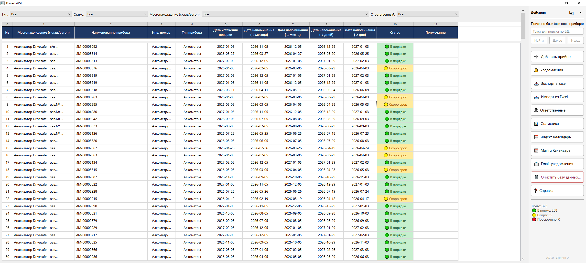
Панель «Действия»
Заголовок панели Подпись «Действия». Кнопки в углу:
- ⧉ — открепить панель в отдельное плавающее окно (там же доступны все кнопки + «Прикрепить» для возврата).
- ◀ — скрыть панель; слева появляется узкая кнопка ▶ для показа снова.
Строка поиска и кнопки навигации
- Поле «Текст для поиска по БД…»
- Поиск подстроки по всем отображаемым полям прибора (без учёта регистра).
- Найти
- Перейти к первому совпадению; подсветка строки.
- Далее / Назад
- Следующее / предыдущее совпадение по списку найденных.
Кнопки команд (сверху вниз)
- ➕ Добавить прибор
- Открывает диалог ввода нового прибора и опционально первой поверки.
- 🔔 Уведомления
- Отправка утренней сводки в MAX (бот). Перед отправкой — вопрос подтверждения; после — отчёт об отправке.
- 📥 Экспорт в Excel
- Диалог сохранения файла; в файл попадают строки с учётом текущих фильтров.
- 📥 Импорт из Excel
- Мастер: выбор файла → анализ → разрешение конфликтов → импорт.
- 👤 Ответственные
- Справочник ответственных и привязка к MAX (user_id).
- 📊 Статистика
- Окно со сводкой по статусам и разбивкой по типам приборов.
- 📅 Яндекс.Календарь
- Настройка CalDAV Яндекс: логин, пароль приложения, URL, синхронизация событий сроков поверки.
- 📅 Mail.ru Календарь
- То же для Mail.ru.
- 📨 Email-уведомления
- SMTP, тест письма, рассылка сводок на email.
- 🗑 Очистить базу данных…
- Удаление всех приборов, поверок, лога уведомлений и каталогов документов; два подтверждения.
- ❓ Справка
- Открывает эту страницу в браузере по умолчанию.
Внизу панели — счётчик «Всего / в норме / скоро / просрочено» и номер версии интерфейса.
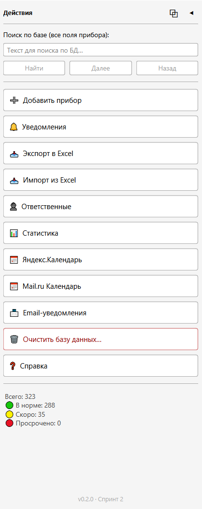
Диалоговые окна — кнопки и назначение
Добавить новый прибор
- Поля: тип (Алкометры / Тонометры), инв. № (обязателен), место, ответственный, при необходимости даты поверки и окончания.
- ➕ Добавить — проверка и запись в БД.
- Отмена — закрытие без сохранения.
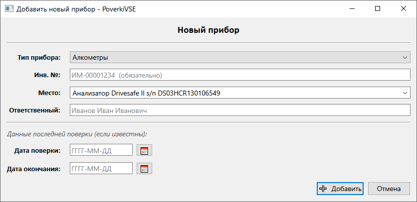
Карточка прибора
- Редактирование полей прибора, дат поверки/окончания; блок «Статус» — только отображение.
- Таблица «История поверок» — просмотр записей.
- Блок «Документы» — см. ниже.
- 🗑 Удалить — удаление прибора с подтверждением (необратимо).
- 📋 Копировать — запрос нового инвентарного номера; создаётся копия прибора.
- 💾 Сохранить — сохранить изменения; при смене даты окончания добавляется запись в историю поверок.
- Отмена — выход без сохранения.
При сохранении может выполняться фоновая синхронизация с CalDAV (если настроено).
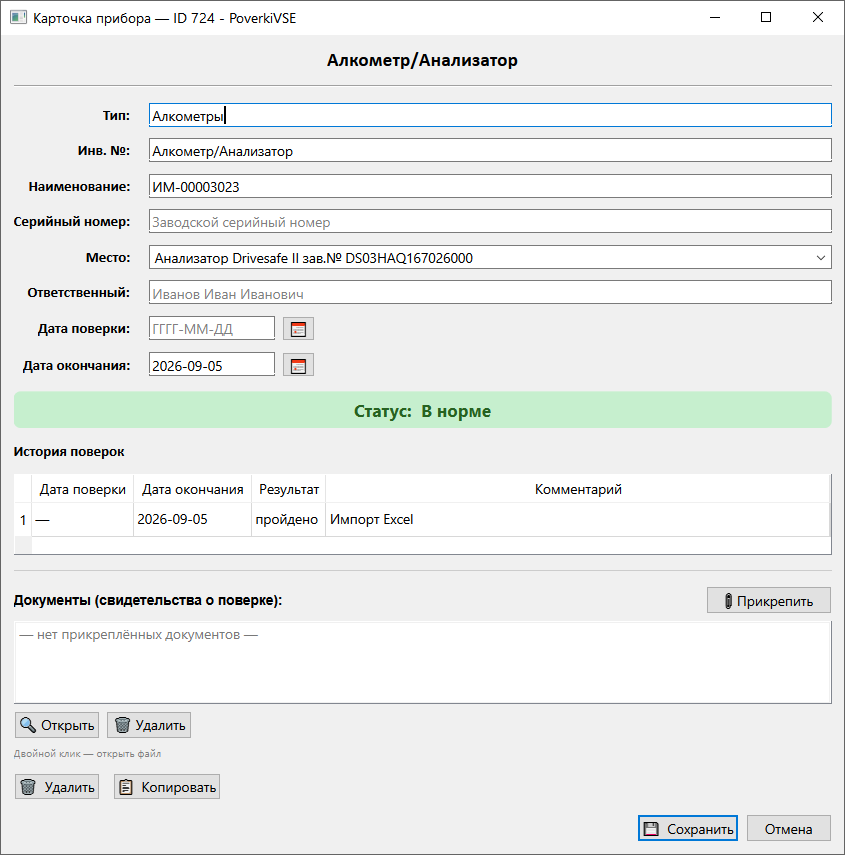
Документы в карточке прибора
- 📎 Прикрепить — выбор файлов (PDF, изображения и т.д.), копирование в каталог
documents/<id прибора>. - 🔍 Открыть — открыть выбранный в списке файл в программе по умолчанию.
- 🗑 Удалить — удаление записи и файла с диска (подтверждение).
- Двойной щелчок по строке списка — то же, что «Открыть».
Импорт из Excel
- 📂 Выбрать файл — журнал в формате с листами «Алкометры» и «Тонометры».
- 🔍 Анализировать — разбор файла и сопоставление с базой.
- Для конфликтов — выбор действия по каждой строке (обновить из Excel / пропустить и т.п., как в мастере).
- ✅ Выполнить импорт — применение; затем отчёт «Добавлено / Обновлено / Пропущено».
- Отмена — выход.
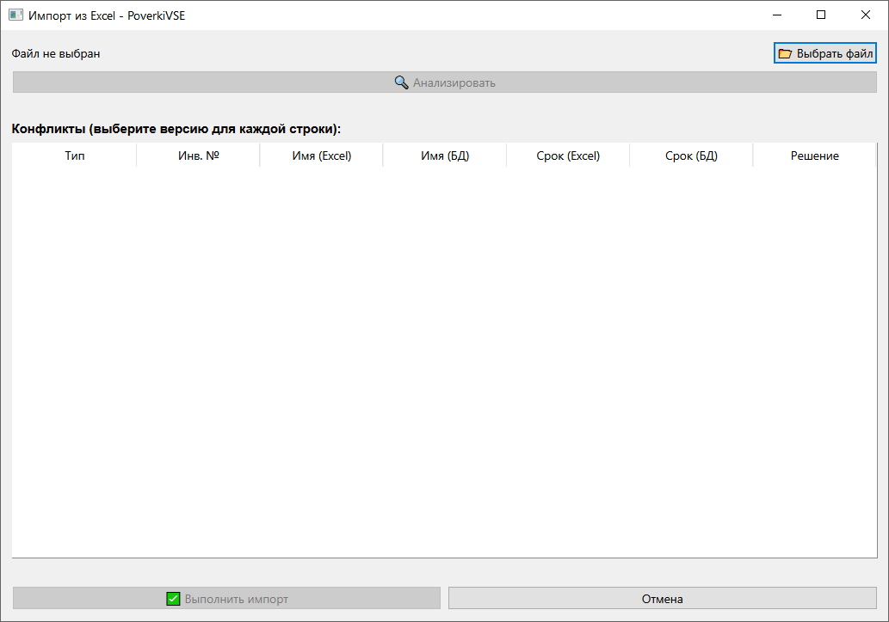
Яндекс.Календарь / Mail.ru Календарь (CalDAV)
- Поля: логин, пароль приложения, CalDAV URL, имя календаря (можно пусто — первый календарь).
- 🔌 Проверить соединение — тест доступа к серверу (настройки предварительно сохраняются).
- 💾 Сохранить — запись учётных данных в локальные настройки.
- 🔄 Синхронизировать все приборы в календарь — массовая выгрузка/обновление событий; по завершении — сообщение или предупреждение при ошибках.
- Закрыть — закрыть окно.
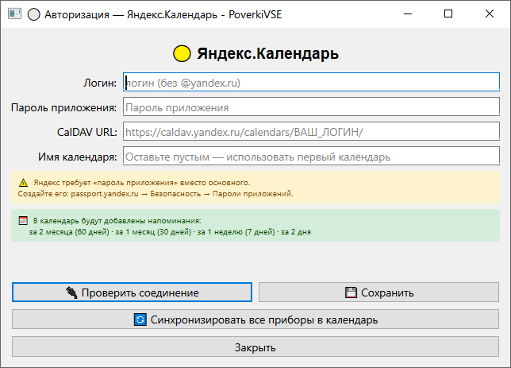
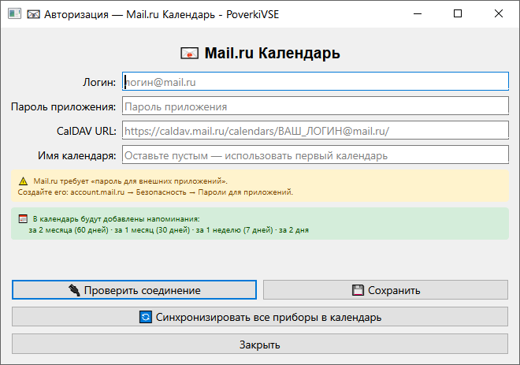
Email-уведомления (SMTP)
- Провайдер — выпадающий список пресетов (Яндекс, Mail.ru и др.) для подстановки host/порта.
- Поля: SMTP host, порт, SSL/STARTTLS, логин, пароль приложения, «От», email администратора (сюда уходит ежедневная сводка).
- 💾 Сохранить SMTP — сохранить параметры сервера.
- 🔌 Тестовое письмо — отправка теста на адрес из поля «Отправить тест на:» или на email администратора.
- Таблица ФИО / Email — почта ответственных для справки (сводка на адреса из таблицы не дублируется автоматически — см. подпись в окне).
- 💾 Сохранить email в таблице — записать email из таблицы в БД.
- 📤 Отправить сводку администратору (фон) — фоновая отправка сводки на email администратора.
- Закрыть.
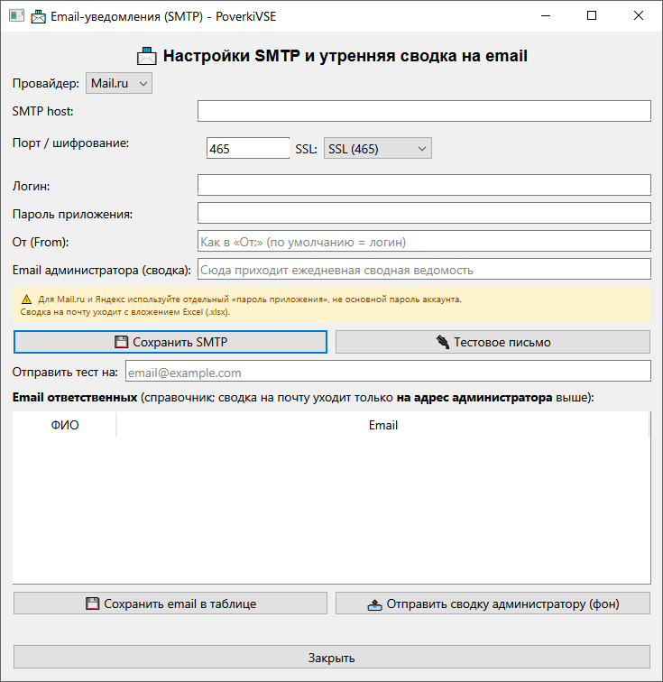
Ответственные (MAX user_id)
- Таблица: ФИО, MAX user_id (число для бота), служебный столбец id в БД скрыт.
- Редактирование ячеек — двойной щелчок; новая строка — ➕ Добавить ответственного.
- Обновить из БД — перечитать данные с сервера.
- Сохранить — запись справочника; сообщение «Справочник ответственных сохранён».
- Закрыть.
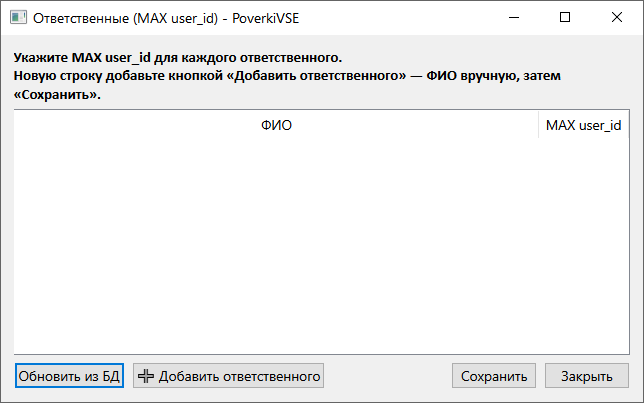
Статистика
Только просмотр: карточки со счётчиками и таблица по типам приборов. Закрытие — стандартная кнопка окна.
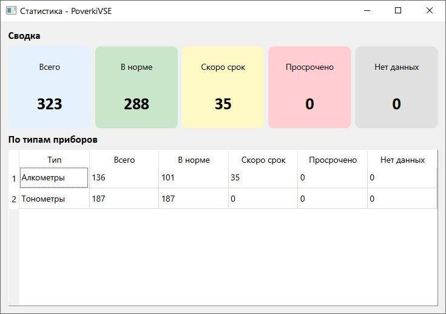
Диалог «Новая поверка» (в коде приложения)
В текущей версии основной сценарий — ввод дат в карточке прибора или правка в таблице. Отдельное окно «Новая поверка» с полями даты и комментария может использоваться в других сценариях; кнопки: стандартные OK / Отмена.
Всплывающие сообщения (тексты из программы)
Ниже — типовые окна с кнопками «Да/Нет», «ОК» и т.д. Формулировки могут слегка отличаться в новых версиях.
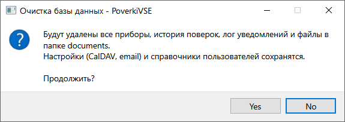
| Заголовок / контекст | Текст / смысл | Действие пользователя |
|---|---|---|
| Справка — файл не найден | Показан путь к help/index.html |
ОК — проверить установку папки help |
| Справка — не удалось открыть | Браузер не открыл ссылку | ОК |
| Очистка базы данных (1-й вопрос) | Предупреждение о удалении приборов, поверок, лога, файлов в documents; настройки сохраняются |
Да / Нет |
| Подтверждение (2-й вопрос) | «Это действие нельзя отменить…» | Да / Нет |
| Готово | «База данных очищена.» | ОК |
| Отправить уведомления | Отправить в MAX утреннюю сводную ведомость… | Да / Нет |
| Готово (уведомления) | Счётчики: отправлено / пропущено сегодня / ошибок | ОК |
| Ошибка | Текст исключения при сбое отправки | ОК |
| Удаление (таблица) | Нет выбранных строк: «Выберите одну или несколько строк…» | ОК |
| Удаление | Подтверждение удаления одного или нескольких приборов | Да / Нет |
| Экспорт завершён | Путь к файлу и число экспортированных строк | ОК |
| Добавить прибор — Ошибка | «Инвентарный номер обязателен…» | ОК |
| Удаление прибора (карточка) | «Удалить прибор и всю историю поверок и документы?…» | Да / Нет |
| Копия создана | Новый ID прибора | ОК |
| Ошибка копирования | Текст ошибки | ОК |
| Импорт — Ошибка чтения файла | Описание ошибки | ОК |
| Импорт завершён | Добавлено / Обновлено / Пропущено | ОК |
| Email — Тест | Заголовок «Тест»: «Укажите email для теста или fallback администратора» (если не заполнен адрес) | ОК |
| Email-сводка | Результат фоновой отправки | ОК |
| Синхронизация CalDAV | Успех или предупреждение с числом ошибок | ОК |
| Ответственные — Готово | Справочник сохранён | ОК |
| Ответственные — Ошибка | Некорректный MAX user_id (ожидается число) | ОК |
| Ошибка БД | Текст ошибки при сохранении ответственных | ОК |
| Документы — Ошибка прикрепления | Текст ошибки | ОК |
| Файл не найден | Файл на диске отсутствует | ОК |
| Удалить документ? | «Файл будет удалён с диска…» | Да / Нет |
Порядок действий (сценарии со стрелками)
Добавить прибор вручную
Открыть и изменить прибор
Поиск по журналу
Экспорт в Excel
Импорт из Excel
Уведомления в MAX
Подключить календарь (Яндекс или Mail.ru)
Полная очистка базы (только администратор)
Удалить приборы из таблицы
Прикрепить документ к прибору
Открыть справку в браузере
index.html) в браузере по умолчанию
Скриншоты — список файлов
Все изображения лежат в папке help/screenshots/. Ниже — дубли для быстрого просмотра справки в браузере.
01-main-window.png— главное окно02-side-panel.png— панель «Действия»03-add-device.png— добавление прибора04-device-card.png— карточка прибора05-import-excel.png— импорт Excel06-caldav.png— CalDAV (пример: Яндекс)07-email.png— email SMTP08-responsible.png— ответственные (MAX)09-statistics.png— статистика10-caldav-mailru.png— CalDAV Mail.ru11-dialog-clear-database.png— диалог очистки БД12-help-browser.png— справка в браузере (фрагмент страницы)13-help-browser-nav.png— оглавление справки в браузере
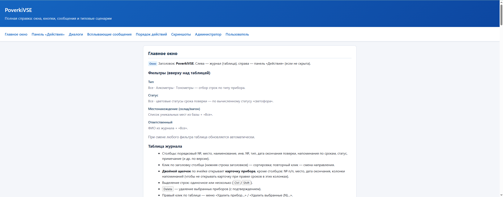
index.html в браузере по умолчанию.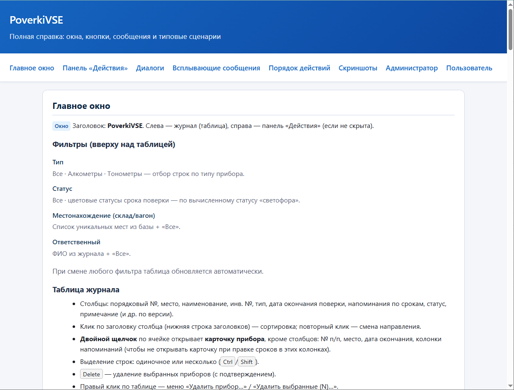
Раздел: администратор
- Контроль каталогов
dataиdocumentsрядом с программой, резервное копирование. - Настройка MAX-бота, ответственных, SMTP, планировщика Windows для
notify_daily(см. документацию в проекте). - CalDAV: выдача паролей приложений у почтовых провайдеров.
- Операция «Очистить базу данных» — только при полной перезагрузке учёта.
Раздел: пользователь
- Работа с фильтрами, поиском, карточкой прибора, экспортом при отсутствии прав на «опасные» настройки (по решению организации).
- Удаление строк и очистка базы при необходимости делегируются администратору.